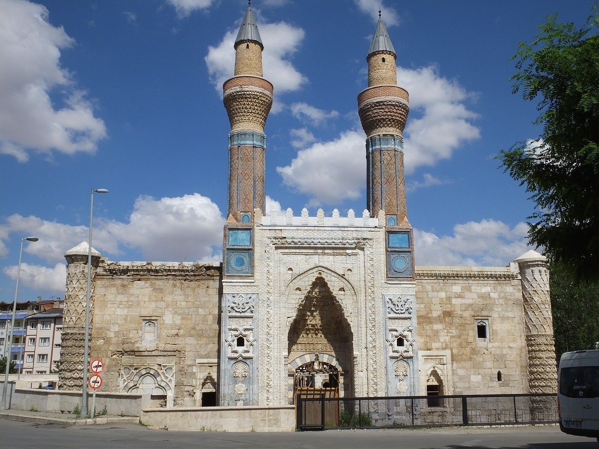

Gök Medrese ya da diğer adıyla Sahibiye Medresesi, Sivas'ta yer alan medresedir. Anadolu Selçuklu Devleti döneminde, batı yönünde giriş kapısının yer aldığı ana büyük kapı üzerindeki kitabesinden anlaşıldığına göre 1271 yılında Sahip Ata Fahrettin Ali tarafından Mimar Kaluytan'a (Kaluyan el-Konevi) yaptırılmıştır. Taç kapısının yan sütunca başlıkları üzerinde karşılıklı olarak yazılı imzaya göre Gök medresenin mimarı Konyalı Kaluyan'dır
Taç kapının üzerindeki kitabede şöyle yazılmıştır: عمر في ايام دولة السلطان الاعظم شاهنشاه المعظم غياث الدنيا و الدين كيخسرو بن قليج آرسلان خلد الله دولته "Ulu sultan, yüce şahlar şahı, dünya ve dinin yardımcısı Kılıç Arslan oğlu Keyhüsrev’in devleti zamanında yapılmıştır. Allah devletini daim eylesin."
Çifte minareli taç kapısı, ve kapının üzerindeki süslemeler, yapının en görkemli bölümüdür. Süslemelerde 12 tür hayvan başı, yıldız, ve hayat ağacı motifleri kullanılmıştır. Duvarları yontma kalker taşından yapılan medresenin minareleri 25 metre uzunluğundadır.
Gök Medrese açık avlulu dört eyvan şemasının uygulandığı iki katlı olduğu iddia edilen bir medresedir. Plastik sanatın şaheserlerinden olan taç kapıda mermer malzeme nedeniyle ışık gölge sistemi genel görünümünü etkilemektedir. Ayrıca sırlı tuğla ve mavi çini işçilikli tuğla örgülü minarelerde taç kapıya daha da önem kazandırmaktadır. Cephenin solunda üç dilimli kemeri, iki satırlık kitabesi ve üç yönü dolaşan geometrik bordürüyle çeşmesi cepheyi daha hareketlendirmiştir. Bu hareketliliği sağ ve sol tarafta benzemeli pencereler ve bekitme kuleler tamamlamaktadır. Medrese taç kapının üst iki köşesinde iç içe girmiş hayvan başları doldurmaktadır.
Minare kaidelerinden aşağı doğru inen mermer yüzeyde büyük boyutlarda geometrik, yazı ve bitkisel motifler simetrik durumda ve plastik görünümünde yapılmıştır. Medreseye girişte sağda mescidi bulunmaktadır. Ahşap minberi sonradan yapılmıştır. Mihrabın büyük bir kısmı günümüze kadar gelebilmiştir. Çini ile kaplı olup üzerinde Ayet-el Kürsi yazılıdır. Üçgenler ile kubbeye geçişin sağlandığı mescidin kubbesi ve etekleri de çini tezyinatlıdır.
Girişin solundaki kare planlı kubbeli oda ise Dar-ül Hadis bölümüdür. İç duvarları sıvanmıştır. Üzeri açık dikdörtgen planlı iç avlunun ortasında bir havuzu olması gerekir. Bugün yapının içinde bu havuzun mermer taşları hala durmaktadır. Anadolu’da bilinen en büyük Selçuklu havuzudur. 22 köşeli poligonil bir plana sahiptir. Avlunun kuzey ve güneyinde altı sütun üzerine inşa edilmiş bir revak kısmı bulunmaktadır. Bu revakların gerisinde küçük kapılardan hücrelere girilir. Doğu yönündeki ana eyvanı yıkılmış yerine mevcut taş ve kitabelerle bir duvar örülmüştür. Kuzey ve güneydeki yan eyvanların içi çini tezyinatla süslüdür. 1934-1967 yılları arasında müze olarak kullanılmıştır.
